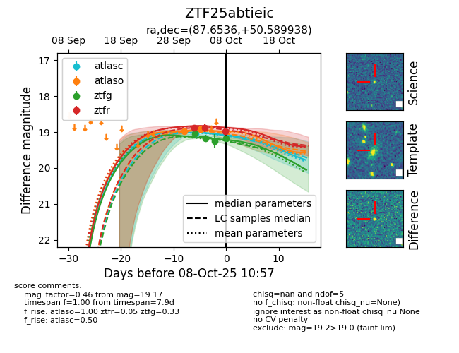
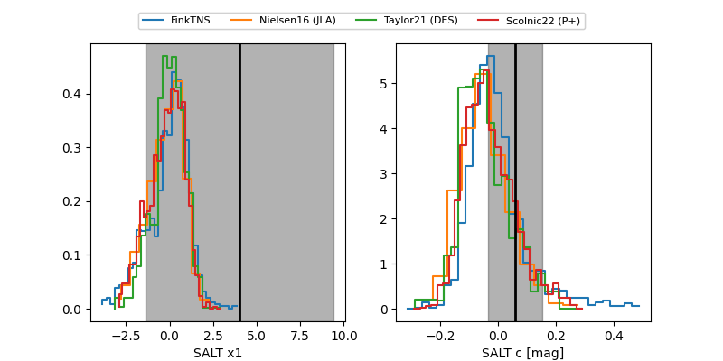

FINK: ZTF25abtieic
Lasair: ZTF25abtieic
ALeRCE: ZTF25abtieic
ZTF25abtieic (ztf,fink)
equatorial (ra, dec) = (87.6536,+50.58994)
galactic (l, b) = (161.6738,+11.77704)


last atlasc=19.05, atlaso=18.92, ztfg=19.17, ztfr=18.99
1 atlasc, 2 atlaso, 4 ztfg, 3 ztfr detections